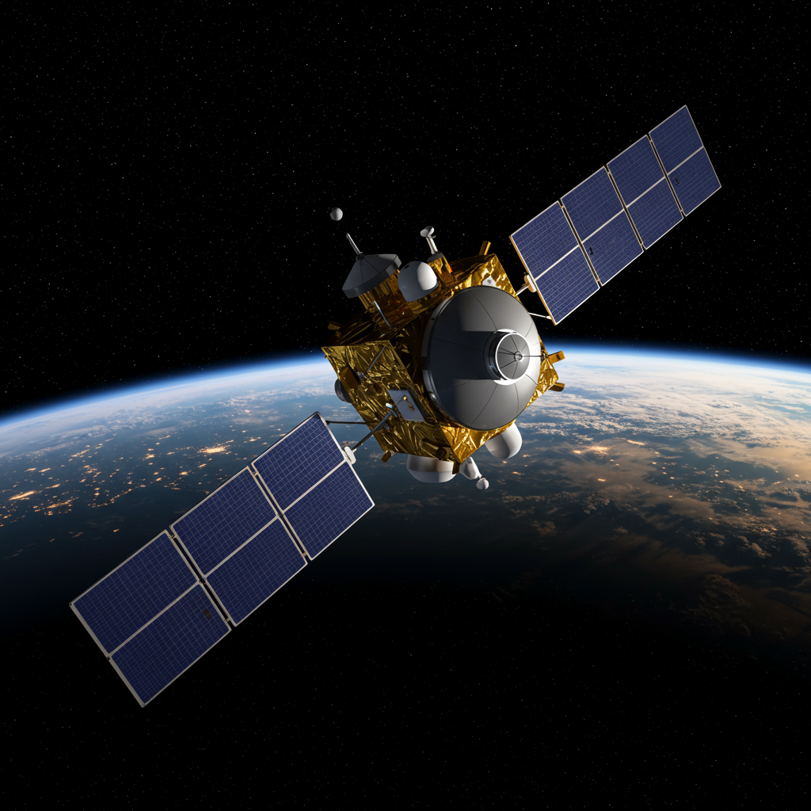

Telstar
Fecha de lanzamiento
Telstar 1: 10 de julio de 1962
Agencia o país
Desarrollado por Bell Telephone Laboratories (EE. UU.), con cooperación internacional (NASA lanzó el satélite).
Objetivo y actividad
Transmitir señales de televisión, datos telefónicos y telemetría a través del Atlántico. Fue el primer satélite en enviar televisión en vivo entre América y Europa, demostrando la viabilidad de las telecomunicaciones globales vía satélite.
Estado actual
Inactivo. Telstar 1 quedó fuera de servicio en febrero de 1963 por daños causados por la radiación tras pruebas nucleares. Sin embargo, el satélite sigue en órbita como parte del “cementerio” de satélites, sirviendo como recordatorio histórico del inicio de las comunicaciones espaciales.